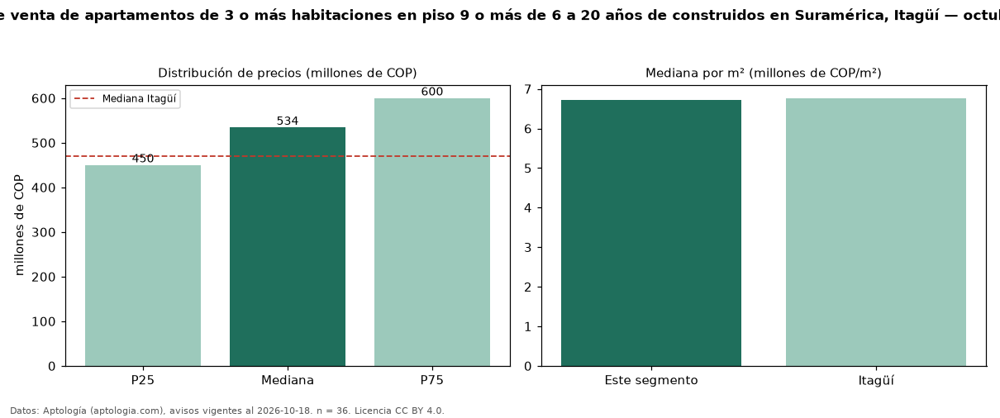

Precio de venta de apartamentos de 3 o más habitaciones en piso 9 o más de 6 a 20 años de construidos en Suramérica, Itagüí — octubre 2026
Con 36 avisos vigentes, el precio mediano de apartamentos de 3 o más habitaciones en piso 9 o más de 6 a 20 años de construidos en venta en Suramérica, Itagüí es COP 534 millones. Frente a la mediana de los apartamentos de 3 o más habitaciones en piso 9 o más en venta de Suramérica (COP 590 millones, n = 127), queda 9 % por debajo; este segmento reúne el 28 % de esos avisos. Por metro cuadrado, la mediana es COP 6,71 millones/m² (n = 36), 5 % por debajo de los apartamentos de 3 o más habitaciones en piso 9 o más en venta de Suramérica (COP 7,07 millones/m²). El área mediana anunciada es 79 m². La administración mediana declarada es COP 420.000 al mes (n = 35). El estrato más frecuente es 4 (89 % de los avisos con estrato). La mediana de todos los apartamentos en venta de Itagüí es COP 470 millones (+14 % de diferencia). 94 % de los avisos con el dato declara parqueadero. Datos: Aptología (aptologia.com), CC BY 4.0 — https://www.aptologia.com/venta/itagui/suramerica. Archivos: PDF, CSV con las cifras y gráfica PNG.

| Avisos únicos | 36 |
|---|---|
| Percentil 25 | COP 450.000.000 |
| Mediana | COP 534.068.000 |
| Percentil 75 | COP 600.000.000 |
| Mediana por m² | COP 6.711.479 |
Fuente: avisos vigentes de portales inmobiliarios recopilados por Aptología, deduplicados (mínimo 30 avisos únicos por celda). Precios pedidos, no cerrados. Fecha: 2026-10-18.